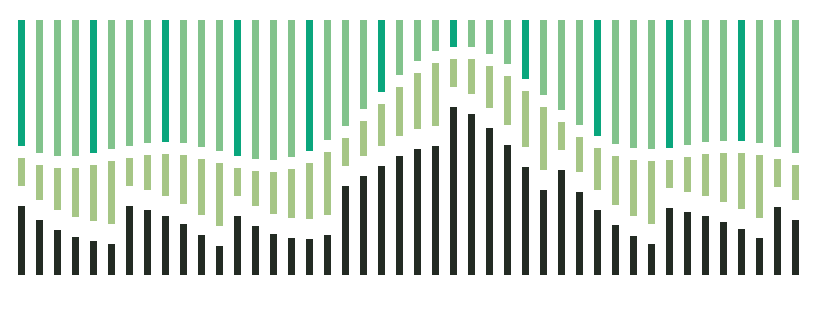

从具体参考开始。
确认截图、拆解比例和图形规则。局部探索服务内容，保持品牌一致。
局部探索模板 ↗
openaiwill 视觉与交互规范
色彩、字体、图形与组件，共用一套规则。
近黑承载内容，灰白负责阅读。柔和绿标记信号，青绿强调行动。状态同时配合文字与形状。
标题用比例建立主次。等宽字只标记数值、坐标与编号。中文保持自然字距和足够的行距。
每一次变化，都有来处。
标题紧凑，正文舒展。用同一套排版，让复杂信息在中英文之间保持清晰。
时间、标识、单位与数值对齐。未知值写作「—」，观测到的零写作「0」。
查看本地字体与许可 ↗24px 网格、细线、方形端点、直角转折。图中的每条关系都有明确含义，演示只在点击后播放。
静态结果始终可读 · 跟随系统减弱动画
切换情景，观察方形标记的位置。区间不表示统计置信度。
保守 32 / 中心 46 / 乐观 62。统一 0–100 尺度；所有值均为虚构样本。
44px 操作高度，2px 控件圆角。用边框、文字与反馈说明状态，支持键盘操作。
Actions / default · hover · focus · disabled
Input / local validation only
横向滚动查看完整表格 →
| 记录 | 类型 | 状态 | 数值 |
|---|---|---|---|
| 产品能力公告（示例） | 来源材料 | 宣称待核验 | — |
| 工作完成程度（示例） | 中心估计 | 虚构样本 | 46 / 100 |
| 社区参与（未连接） | 观测指标 | 未采集 | — |
真实记录应显示作者、发布与采集时间、原始链接、宣称内容和核验状态。本条只演示展开交互，没有关联真实事件。
采用帖子中的探索、确立、交付方法。风格已经选定，后续围绕真实内容完成设计与审阅。